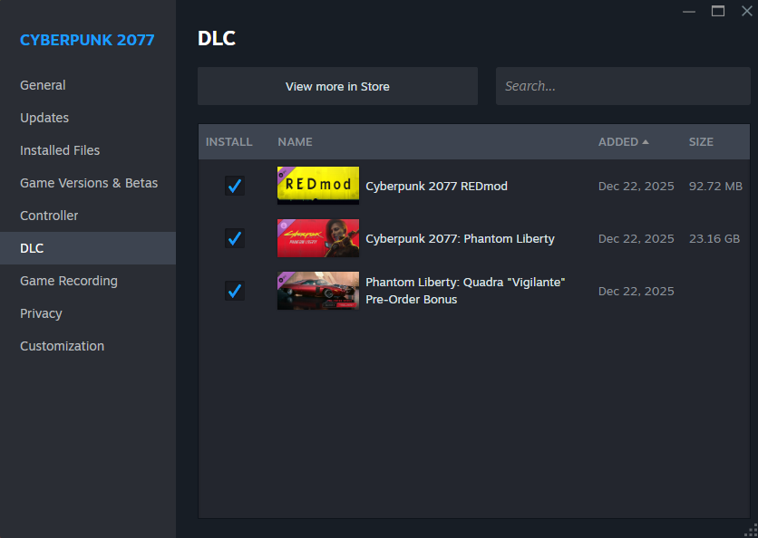
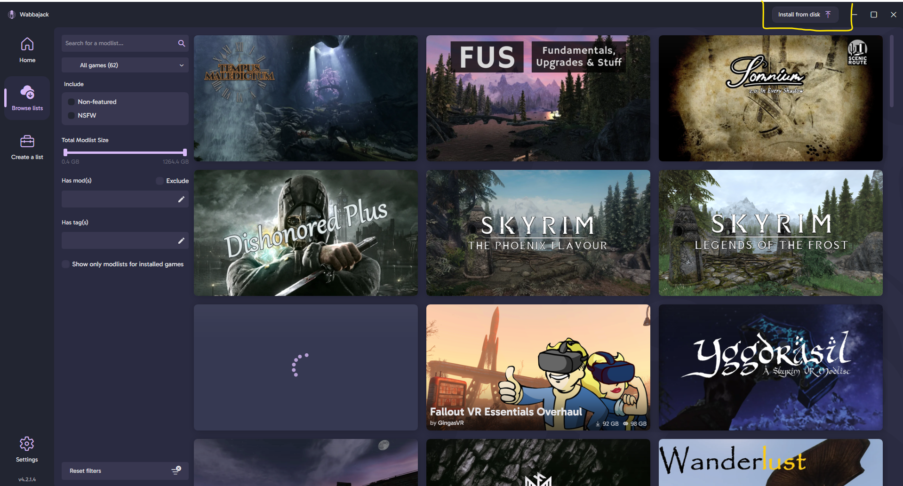

Night City doesn't respect you. It doesn't see you as anybody.
Survival is not a right, it's a privilege. Earn your place.
Important
PunkCity is built for Cyberpunk 2077 2.31.
Phantom Liberty DLC is Mandatory
This list is currently in active development. Expect additions and changes between versions.
Warning
Always launch the game through Mod Organizer 2. Launching through Steam directly will bypass the mod setup and break the list.
About the List
PunkCity is a Wabbajack modlist for Cyberpunk 2077 built around one idea:
the city owes you nothing.
Most playthroughs let you become a legend overnight. PunkCity pushes back. Your body has needs.
Your reputation has weight. The story won't drag you along, it waits for you to earn the right to be
part of it. The city is indifferent, the streets are dangerous, and every cold decision you make will follow you.
This is no power fantasy. You'll suffer, and you'll be content.
What You're Getting Into
Survival mechanics that make your body a resource you have to manage
A paced experience that rewards immersion over rushing
True reputation system where senseless violence has real costs
More systems being added — check back as the list develops
In-Game Showcase
Hover to pause · ← → to navigate · Swipe on mobile
Character Creation
The list gives strong emphasis to Character Creation freedom. It utilizes EBBRB as the
body mod for Female V and Atlas for Male V.
Valerie has at least 5–20× more accessories, hairs, and clothes than Vincent. Unfortunately modders
favor feminine body mods — nothing I can do about it.
This is my first modlist. I am primarily a Skyrim modder (5 years), however I became so fixated
with Cyberpunk 2077 that I released a list for it before my favourite fantasy game.
I did my best but the list is far from perfect. If you find bugs or bad clipping, please let me know.
I plan to use user experiences as the basis for whether something is performing well or poorly —
the gameplay is refined, but the cosmetics may not be. Please bear with me.
System Requirements
Can You Run It?
Requirements
You need an official, fully updated copy of Cyberpunk 2077.
An SSD is required. Do not attempt to run this from an HDD.
Only Windows 10/11 is supported.
Platform & OS
Component
Requirement
Notes
Operating System
Windows 10 / 11
Linux is not supported
Storage Type
SSD Required
HDD will cause severe load issues
Game Version
Cyberpunk 2077 v2.31
Must be official & updated
DLC
Phantom Liberty Mandatory
List will not function without it
Hardware
Minimum specs and recommended hardware will be listed here as the list is finalized. Check back for updates.
Estimated Size Breakdown
Exact figures will be updated as the list grows.
Base Game + DLC~84.6 GB
Downloads~19.4 GB
Install Size~20.0 GB
Final Size~39.4GB
Do allocate atleast 70GB for the temporary wabbajack files.
Pre-Installation
Before You Begin
The steps below assume you're using the Steam version of the game. Complete every step before moving on to Installation.
Setup Steps
Perform a clean install of Cyberpunk 2077. Install it outside of Program Files.
Confirm that Steam shows both Cyberpunk 2077: REDmod and Cyberpunk 2077: Phantom Liberty as installed before continuing to the Installation page.

Installation
Installing PunkCity
Choose the method that applies to you. Both paths end at the same place — pick whichever is available.
Availability
The gallery listing is not yet live. This method will be available once PunkCity is submitted to the Wabbajack modlist repository.
Download Wabbajack and place it somewhere outside your Cyberpunk folder and outside Program Files.
Example: D:\Wabbajack
Launch Wabbajack. On the main screen, click Browse Modlists.
Note
Please make sure to tick Non-featured otherwise the list may not show up.
Search for PunkCity in the gallery and click the download arrow to begin.
Set your install paths:
Installation: D:\Modlists\PunkCity
Downloads: D:\Modlists\downloads
Path Rules
Both paths must be on the same drive as your Cyberpunk install, and not inside the game directory or Program Files.
Click Install and let Wabbajack handle the rest. This will take a while depending on your connection speed.
Once complete, open your install folder and launch ModOrganizer.exe.
Confirm the active profile is set to PunkCity, then click Run.
When to use this
Use this method if the Wabbajack gallery listing isn't live yet, or if you prefer to download the .wabbajack file manually from the Nexus page.
Download Wabbajack and place it somewhere outside your Cyberpunk folder and outside Program Files.
Example: D:\Wabbajack
Go to the PunkCity Nexus Mods page and download the main file, it contains .wabbajack to install file manually. Save it anywhere convenient.
Launch Wabbajack. Navigate to Browse Modlists, on the top right click Install from Disk.

In the file picker, navigate to and select the PunkCity.wabbajack file you just downloaded.
Set your install paths:
Installation: D:\Modlists\PunkCity
Downloads: D:\Modlists\downloads
Path Rules
Both paths must be on the same drive as your Cyberpunk install, and not inside the game directory or Program Files.
Click Install and let Wabbajack handle the rest.
Once complete, open your install folder and launch ModOrganizer.exe.
Confirm the active profile is set to PunkCity, then click Run.
Post-Installation
Final Setup
Antivirus
Antivirus Warning
Third-party antivirus software (BitDefender, Norton, Webroot, etc.) can interfere with MO2's Virtual File System. If you're experiencing issues, you may need to disable or remove it.
Windows Defender with sensible browsing habits is sufficient.
If you're using Windows Defender, add your PunkCity install folder as an exclusion:
How to Add a Windows Defender Exclusion
Open Windows Security
Go to Virus & threat protection
Click Manage settings
Scroll to Exclusions → Add or remove exclusions
Add your PunkCity installation folder
Optionally also exclude PunkCity.exe and Cyberpunk2077.exe
Check the Overwrite box before installing so updated files replace old ones properly.
Custom Mods
If you've added your own mods, tag them in MO2 to protect them during updates:
[NoDelete]
Changelogs
Version History
All notable changes to PunkCity are documented here.
Most recent version is expanded by default.
1.1.1UPCOMING
Added
Removed
Enemy Dodging Fix
Immersive Shooting AI
No Shooting Delay
New Game Plus
Fixed
1.1.0May 15 2026
Added
Updated: Apartment Cats - The Glen
Updated: Apartment Cats - Corpo Plaza
Updated: Apartment Cats - Japantown
T-Bug - Redesign
Crosshair Redone - Simple
Street Sense
Night City Remembers
The Thin Blue Line
Removed
SPLAT
Nova Traffic
Nova Traffic - All Modded Vehicles
Arch V4 - Vigil
Who Was That Again
Crosshair Redone - Dot Only
Night City Alive
They Will Remember
Fixed
Fixed the flimsy ragdolled NPCs issue
Fixed missing optional mods due to compilation mistakes
White textured motorcycles
Stolen vehicles randomly being swapped on loading
Repetetive and unimmersive traffic load, car spawns now have lore weight behind it
(Ex: No more random bugattis on the badlands, no more random lamborghinis in pacifica and dogtown.)
1.0.0May 14 2026
Added
Initial release
Known Issues
Known Issues
This section contains the issues that I am aware of and will try to fix.
However there are cases that its an engine issue and I cannot do anything about it.
Can't shoot through modded car's windows but shooting at the windshield works
Some modded vehicles are basically a remodeled Caliburn. The Rayfield Caliburn's windows are impenetrable but are shootable at the windshield, hence the behavior.
Bald V / Glitchy shadows
This is a problem with both CDPR's lazy animation and Mod Authors not pulling a shadow mesh in their hair mods. If you encounter this with Cyberware from character creation, it might be bad mesh, let me know if you encounter it anywhere else.
Enemy HP Bar gets bigger when they're healing
This is because of Combat Evolved, I have reported the issue to the author